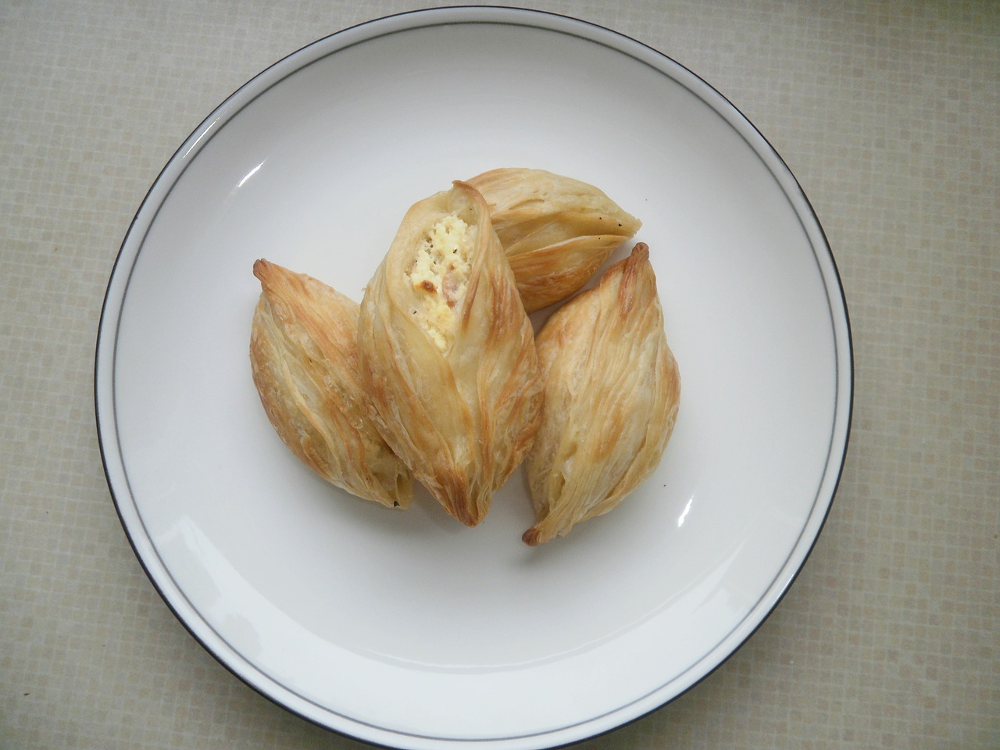
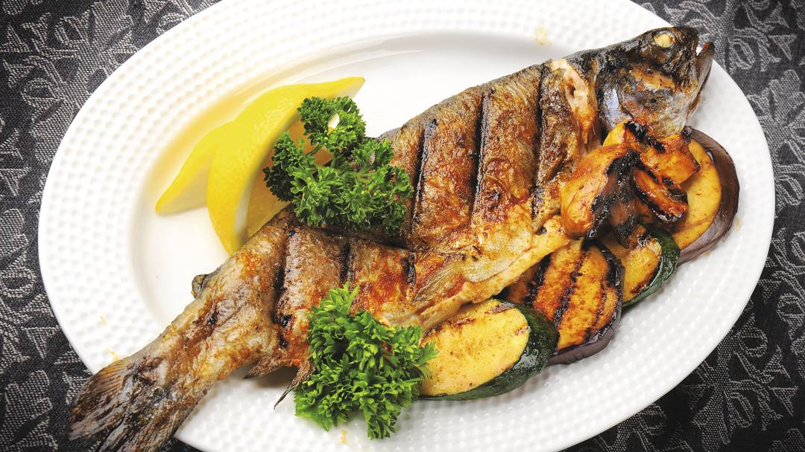
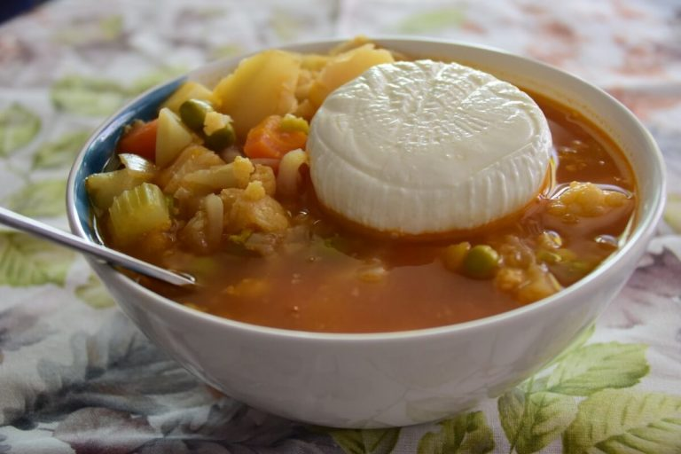
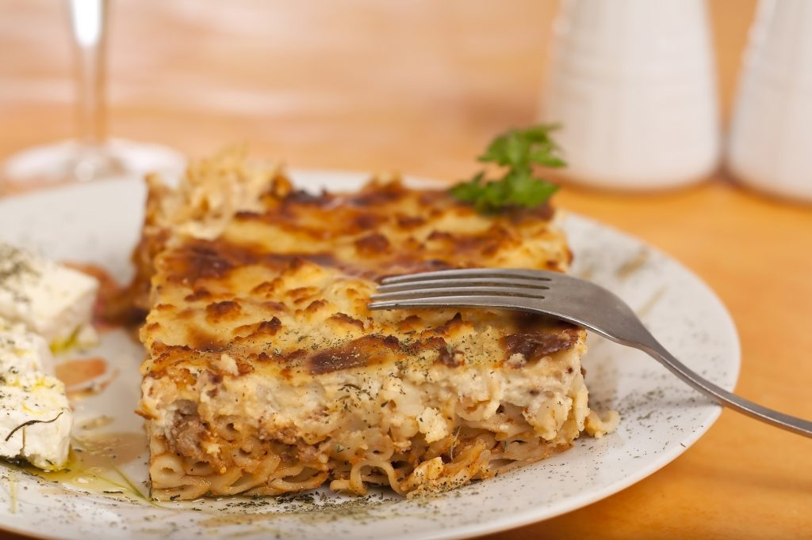

Gastronomia

Pastizzi
Essa delícia está para Malta assim como a coxinha está para o Brasil! Tem em quase toda esquina e é simplesmente amado pelos moradores (e claro, turistas!).Imagine uma massa folhada, deliciosamente crocante, quentinha e saborosa, recheada com carne, queijo, frango, Nutella ou cremes de ervilha e ricota
Saiba Mais →

Lampuki
É claro que em uma ilha não podia faltar o consumo de peixe! Conhecido no Brasil como Dourado-do-Mar, Cabeçudo e outras dezenas de nomes, em Malta você o encontra em praticamente em qualquer restaurante, já que é um dos peixes mais famosos na culinária maltesa.
Saiba Mais →

Sopa Tal-Armla
Bem comum durante o inverno maltês, a sopa que tem a cara do mediterrâneo pode te fazer mudar de ideia e provar que sopa é janta, sim! – e pode inclusive ser almoço também. Preparada com tomate, queijo Gbejniet (com leite de cabras e ovelhas) e diversos vegetais, a Tal-Armla parece até de outro país, mas é tipicamente maltesa.
Saiba Mais →

Timpana
Tudo bem que macarrão penne é facílimo de encontrar nos quatro cantos do mundo, mas o preparo maltês é que dá um sabor especial e super diferente à comida que já estamos acostumados. O prato leva ovo, queijo, carnes de porco e de vaca e claro, o macarrão.
Saiba Mais →